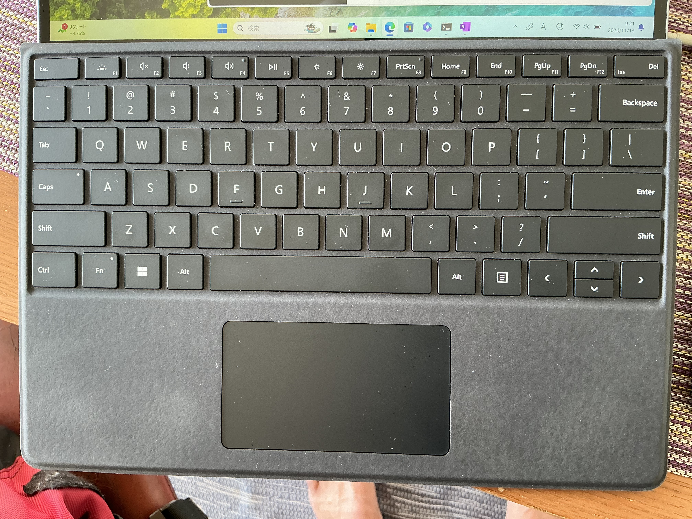
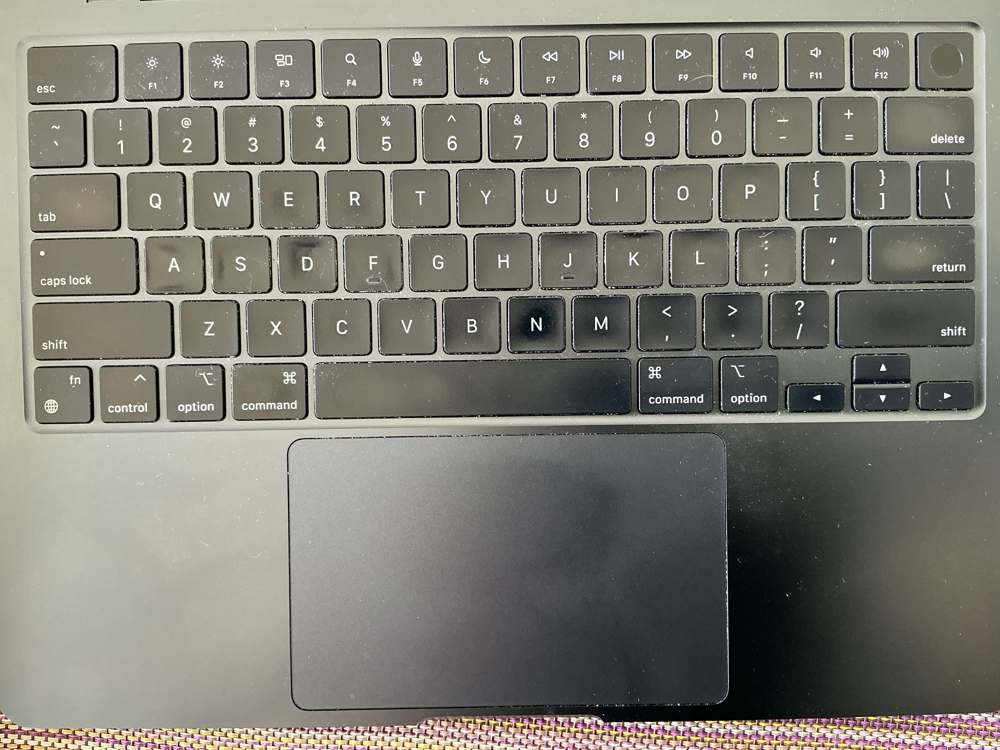
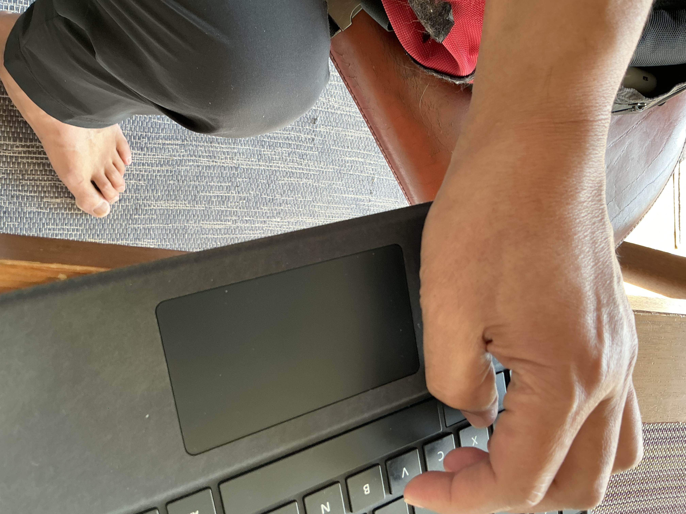

Fingering
Table of Contents
1. 運指(Fingering)
Ctrl-keyを人差し指で押して操作する人がたくさんいますが， それでは，運指の益を享受できません．
Ctrl-keyが両側にあるといいのですが， それはありえないみたい．
なので，左手全体をスライドさせます． 下の写真参照．
| emacs | Ctrl-a | pinky -> ctrl | ring -> a | |
| windows | Atl-v | thumb -> alt | index -> v | |
| Mac | com-v | thumb -> com | index -> v | |
| command or Apple | ||||
| com-x com-v | thumb -> com | index -> x | index -> v | |
| opt-shift-i | thumb -> opt | middle-> shift | r-middle -> i |
2. emacs
| Ctrl-a | pinky -> ctrl | ring -> a | ||
| Ctrl-f | pinky -> ctrl | index -> f | ||
| Ctrl-g | pinky -> ctrl | index -> g | ||
| c-x c-f | pinky -> ctrl | index -> x | index -> f | |
| c-x c-s c-z | pinky -> ctrl | middle -> x | middle -> s | middle -> z |
| c-x c-c | pinky -> ctrl | index -> x | index -> c | |
| c-c c-l | pinky -> ctrl | index -> c | r-pinky-> l |
3. keyboardと左手
|  |  |
|  | |
| left pinky for Ctrl | left thumb for Alt(Win) or Command(Mac) |
そういえば昔，Vulcan death gripってのがSilicon Graphicsにあったな．．． どんなんやったっけ？
Shift-Ctrl-F12-\